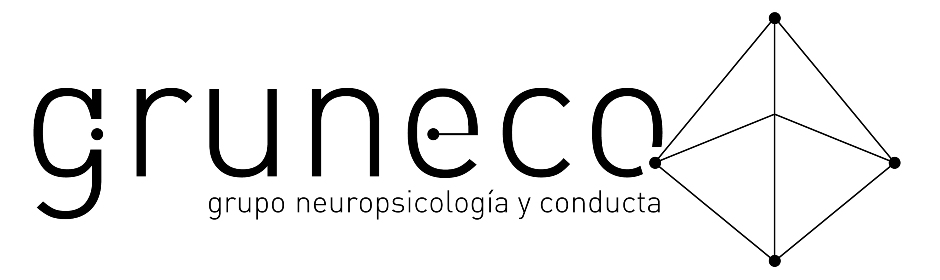

<mat-toolbar color="primary" style="background-color: black;">
  <span>
    <a routerLink="/"></a>
  </span>
  <span class="spacer"></span>
  <ul >
    <li *ngIf="userIsAuthenticated">
      <a mat-button routerLink="/create" routerLinkActive="mat-warn">Nuevo Ingreso</a>
    </li>
    <li *ngIf="userIsAuthenticated">
      <a mat-button routerLink="/search" routerLinkActive="mat-warn">Buscar</a>
    </li>
    <li *ngIf="!userIsAuthenticated">
      <a mat-button routerLink="/login" routerLinkActive="mat-warn">Ingresar</a>
    </li>
    <li *ngIf="!userIsAuthenticated">
      <a mat-button routerLink="/signup" routerLinkActive="mat-warn">Registrarse</a>
    </li>
    <li *ngIf="userIsAuthenticated">
      <button mat-button (click)="onLogout()">Salir</button>
    </li>
  </ul>
</mat-toolbar>
